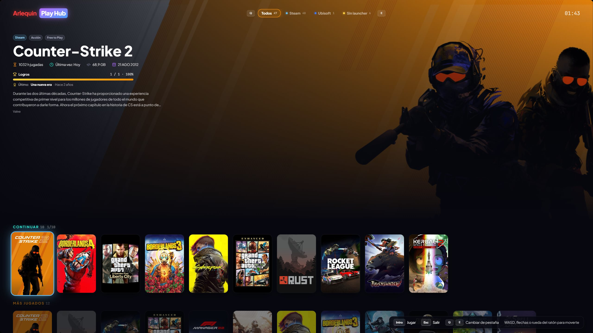

Play Hub: per jugar des del sofà
Una interfície a pantalla completa pensada per al comandament i el televisor.
Amb F11 o des de la barra lateral, GameHub es converteix en una interfície gran per fer servir amb un comandament: portades enormes, el joc seleccionat al fons amb la seva informació, i moviment fluid, d'un en un.
A dalt tens pestanyes: «Tots» i una per a cada botiga. Canvies de pestanya amb L1/R1 (LB/RB a Xbox) i cadascuna té les seves files: Continua, Més jugats i tota la teva biblioteca. Quan tornes a una pestanya et trobes just on l'has deixada, i quan tanques un joc que has obert des de Play Hub, tornes a Play Hub en aquell mateix joc.
Reconeix els comandaments d'Xbox, PlayStation i Switch i canvia els botons que veus perquè coincideixin amb el que fas servir (o els que triïs). També funciona amb el teclat (fletxes, WASD, Q/E) i la roda del ratolí. Els jocs sense portada en reben una de pròpia, amb el seu nom i colors.
Mostra la bateria del teu portàtil o Steam Deck, dels teus comandaments i dels teus auriculars, s'adapta a pantalles petites com la de la Steam Deck i, mentre jugues, el comandament ja no el controla en segon pla.
El botó Menú/Start obre un menú per fer-ho tot amb el comandament: cerca (amb teclat en pantalla), joc a l'atzar, filtre (també per gènere) i ordenació, la fitxa del joc (juga, configuració gràfica, còpia i restauració de SaveHub), configuració, anar a altres seccions o a la Caixa de la sort, i apagar, reiniciar o suspendre el PC.
Només baixada directa Pestanya Consoles amb els teus jocs d'EmuHub, una fila per consola, i el comandament configurat a PCSX2, DuckStation i Dolphin.
Com es fa servir
- F11 o «Play Hub» a la barra lateral.
- A Opcions → Comandament i Play Hub tries l'estil dels botons.
- A Opcions → Comandament i Play Hub pots amagar i reordenar les files de Play Hub (Continua, Més jugats) i les seccions «Ves a…».

Vols provar-lo?
⬇ Baixada directa 🛍️ Baixa'l de Microsoft StoreWindows 10 i 11 (64 bits) · Gratuït · S'actualitza sol